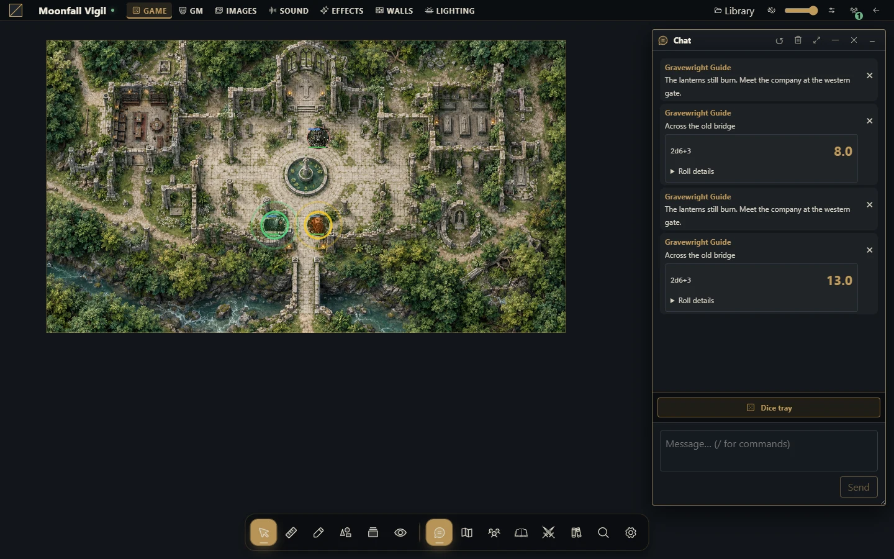

Chat e notação de dados
Envie mensagens e aprenda um conjunto útil de expressões nativas de dados.


Envie a mensagem certa
Abra o chat, confira contexto de cena/público e envie uma mensagem de teste. Use entrega privada ou ao mestre somente pelos controles de público suportados e confira destinatários antes de enviar segredos. O resultado é armazenado com a mensagem; atualizar a tela de outro usuário não deve criar outra rolagem.
Role uma expressão
Use a interface de dados para enviar uma expressão. A notação nativa usa d minúsculo, quantidades e faces inteiras positivas, aritmética e parênteses.
| Expressão | Significado |
|---|---|
| 1d20 + 3 | Role um d20 e some três |
| 2d6 + 1 | Some dois d6 e acrescente um |
| 4d6kh3 | Mantenha os três maiores de quatro d6 |
| 2d20kl1 | Mantenha o menor de dois d20 |
| 1d6! | Exploda recursivamente na face máxima |
| 1d6r1 | Role novamente uma vez quando sair um |
| 4dF | Quatro dados Fudge |
| 8d10 >= 8 | Conte dados ativos com resultado pelo menos oito |
Modificadores ficam ligados ao termo de dados: 4d6kh3 funciona; separar kh3 com espaço não. Repetições e explosões recursivas têm limites no motor; uma expressão pode ser recusada por complexidade.
Observe os espaços nas comparações
1d6!=5 significa explodir ao sair cinco. 1d6 != 5 é comparação de expressão. 2d6!>=5 é explosão condicional; 2d6! >= 5 explode normalmente e depois conta sucessos. Use espaços intencionalmente ao combinar modificadores e comparações.
Funções numéricas suportadas incluem floor, ceil, round, abs, min, max e clamp, em minúsculas. Funções desconhecidas e comparações encadeadas são recusadas.
Responda à solicitação de um objeto
O mestre pode configurar um Desafio de dados ou a ação Solicitar rolagem de dados num Objeto Inteligente. Um destinatário autorizado recebe a janela nativa com expressão e rótulo. Confira e pressione Rolar explicitamente; receber a solicitação não rola os dados sozinho. O servidor valida a expressão e publica o resultado para o público configurado, público ou mestre, pelo serviço normal de dados.
Retentativas e múltiplas abas reutilizam a mesma rolagem lógica daquele destinatário. Streamers não recebem solicitações acionáveis. O grafo continua depois de solicitar a rolagem; não espera o resultado nem aplica sucesso, dano ou recompensas específicos de RPG. Essas regras pertencem ao pacote do sistema escolhido.
Solucione problemas
Se falhar, simplifique para 1d20 e acrescente um modificador por vez. Confira minúsculas e espaços. Após perder a conexão, procure o resultado confirmado no chat antes de enviar outra rolagem. Um novo envio representa uma nova rolagem lógica, mesmo com expressão idêntica. Sistemas instalados podem acrescentar controles próprios sem mudar o significado de toda expressão nativa.